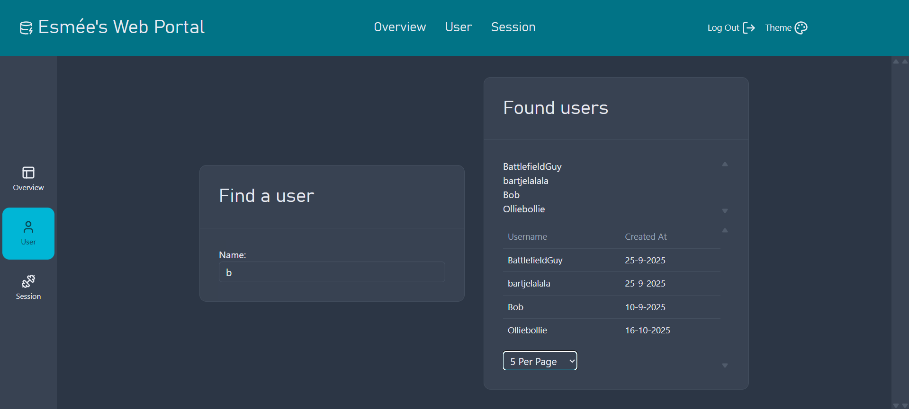
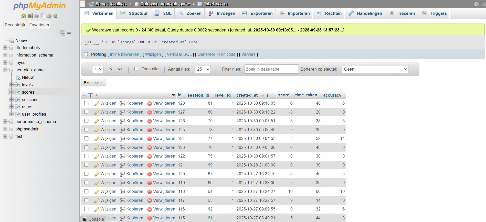
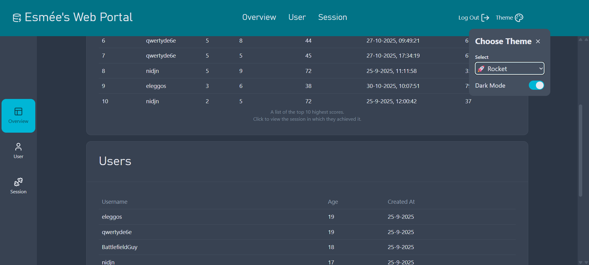

Supporting system for Pin It or Quit It
This web portal was developed as a companion system for the AR game Pin It or Quit It. It stores and displays player scores collected from the game in a structured online database. Players’ performance data, such as total points, compliments hit, and insults avoided, are sent directly from Unity to the backend.
When a game session ends, Unity sends the player’s score and game statistics through a PHP script that connects to the MySQL database managed via PHPMyAdmin. The Svelte-based web portal retrieves and displays these scores in real time, allowing for easy monitoring, testing, and presentation of player performance.
This setup demonstrates a full integration between a Unity game and a custom-built web system, a valuable skill for creating connected game experiences and data-driven gameplay insights.



Creating this web portal was a valuable experience in combining game development with web technologies. It required an understanding of both front-end design and back-end data handling. I learned how to structure data flow between Unity and a live database, use PHP scripts for communication, and design a responsive front-end in Svelte. This was also my first time working with Linux!
This project helped me gain confidence in building connected systems, an important step toward creating more interactive and data-driven games.